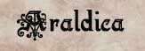
I colori dominanti nell'Impero Scuro sono tre : Nero, questo colore indica la passione degli abitanti per le tenebre (si pensi ai drow), la produzione di inchiostro per la ricchezza di molluschi presenti sulle scogliere del Granducato di Karsar, e il periodo buio trascorso da questa civiltà umana osteggiata da tutti gli altri regni del Sud-Arelia. Blu scuro, indica il mare freddo e tempestoso delle scogliere e la passione per la navigazione di questa popolazione. Viola, è il colore più vivace usato nell'Impero, simbolo di nobiltà è usato dai nobili e dai sublimi indica eccellenza, coraggio e onore ma al tempo stesso è un tono di colore che incute rispetto e timore.
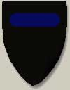
Scudo Ufficiale della città di Pergar e della Casata Valérian
E' lo stemma della capitale Pergar e della casata del Granduca, dominato dal nero che indica la città della notte (Pergar era chiamata un tempo la Bella di Notte) con una piccola striscia blu ad indicare l'origine e l'importanza del mare freddo e profondo che bagna tutte le scogliere del Granducato. E' lo scudo ufficiale delle guardie della città di Pergar e delle truppe regolari granducali che non appartengono a feudi o formazioni particolari.
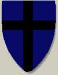
Scudo di Simiar e della Baronia Blu
E' lo stemma della città di Simiar, ha una forte predominanza di blu ad indicare la natura principalmente di porto commerciale della cittadella. E' lo scudo utilizzato dalle truppe della Casata di Simiar il cui Barone ha come centro militare il Castello delle Onde subito a nord della cittadella.
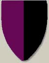
Scudo dei Quarras e della Contea del Sud
E' lo stemma nobiliare della potente casata dei Quarras utilizzato nell'estesa Contea del Sud che si trova a ridosso del Massiccio Isolato. Il colore viola esteso indica la natura nobiliare antichissima della casata che vanta le origini nobiliari più remote fra le casate umane compresa quella dei Valérian. Il lato nero indica il velo tenebroso che da sempre avvolge questa potentissima famiglia nobiliare e le sue tradizioni legate alla negromanzia e alla stregoneria.
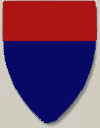
Scudo della Città autonoma di Imian
E' lo stemma della città interna di Imian, si tratta di una città governata dall'Ordine dei Sublimi di Imian che è presieduto da un membro interno, il Consigliere dell'Ordine di Imian, scelto dall'Impero. composto dai principali sublimi proprietari terrieri della zona. La cittadella ha una storia di commercio e di agricoltura autonoma dal resto delle città del Granducato. Il colore rosso, non tipicamente pergariano, sottolinea infatti la storia di autonomia che contraddistingue questa regione che dispone anche di un cospicuo corpo di guarnigione autonomo, che appunto utilizza questo scudo. Il blu scuro invece segna il fortissimo legame di questa città, polo agricolo del Granducato, con le città e i nobili delle scogliere.
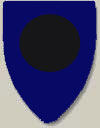
Scudo della Baronia della Lunga Notte e del Villaggio di Molgon
E' lo stemma della Baronia interna della Lunga Notte e del suo villaggio di Molgon. Si tratta della meno importante Baronia del Granducato, isolata e a ridosso dei Monti Ombra e dei Boschi dell'Ululato. Famosa per la tradizione di guerrieri coraggiosi e soldati fedeli che la Casata della Lunga Notte addestra nella Rocca Dura è una regione che si basa sul legnatico e sull'allevamento principalmente di ovini.
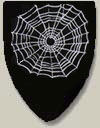
Scudo Imperiale Drow
E' lo stemma Imperiale dei Drow, indossato unicamente dalle truppe di elfi scuri. E' anche lo stemma ufficiale della capitale drow Endarial (che in drow vuole dire la città occulta) che si dice si trovi nelle profondità del sottosuolo sotto i Boschi dell'Ululato. E' dunqhe il simbolo della civiltà drow che si è inserita nella civiltà umana pergariana stabilitasi sulla superficie del Granducato. Le origini della città drow sono antichissime ed è certo che alla venuta di Ilgadon e degli umani nella regione questa capitale drow già esisteva ed era fiorente.
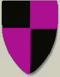
Scudo
del Castello di Arlos
Per la sua importanza, nonché per il suo rilievo storico e geografico, le truppe che stanziano al Castello di Arlos, ossia il Corpo di Guardia di Arlos e l'Armata Karsar, utilizzano lo scudo a scacchi viola e nero. Il colore viola ricorda la diretta dipendenza dalla nobiltà e dalla famiglia Valérian, mentre il nero è indice della durezza del compito richiesto a questi soldati.
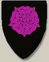
Scudo dell'Ordine dei Cavalieri della Viola
E' lo stemma
del più importante Ordine
di Cavalleria del Granducato, con al centro il simbolo della viola che lo
contraddistingue. Le origini di questo Ordine di cavalleria di perdono nella
storia di una particolare di tre comunità che esistevano nelle terre del Sud
(oggi Granducato di Trisengar), che erano piccole cittadine libere e autonome.
Queste tre città erano difese e protette dai valorosi guerrieri di cui ognuna
di queste disponeva numerose. Questi guerrieri erano nati e addestrati per
difendere la loro comunità da ogni pericolo esterno, erano guerrieri senza
paura e pronti a morire in battaglia. Il simbolo di queste tre città era un
fiore, per una di queste la montana Klessia
era una splendida viola, per la seconda Telian,
splendido villaggio situato su un fiume era una rosa blu come il colore del
fiume che aveva reso ricca la cittadina, per la terza Hoveran
era un giglio nero. I
combattenti di queste tre città erano sempre stati legati fra loro e ai loro
simboli. Quando un giorno il Granducato di Trisengar volle annettere queste città
privandole della loro libertà, nulla si poté fare contro il potente ed enorme
esercito del Granducato, così l’autonomia delle tre città fu una dopo
l’altra eliminata, non si riuscì però ad eliminare la tradizione guerriera
legata ai simboli dei fiori che continuava a vivere nel cuore degli abitanti di
quelle zone. Quando Ilgadon fece scoppiare la guerra civile con i Trisengar, i
combattenti dei tre fiori si schierarono con lui, non tanto perché ne
condividevano gli ideali, ma perché volevano riottenere la libertà per le loro
città cosa che Ilgadon aveva promesso loro in caso di vittoria. A seguito della
vittoria dei Trisengar, però, tutti i combattenti dei fiori dovettero fuggire
insieme all’esercito rimanente di Ilgadon.
Sotto
la guida di Ilgadon combatterono la guerra delle Scogliere e fondarono insieme a
costui e ai suoi altri seguaci, il Granducato di Karsar.
I
combattenti dei tre fiori con gli anni seguirono strade diverse
nell’organizzazione pergariana:
Quelli della viola, fondarono, appunto, il potente Ordine di Cavalleria dei Cavalieri della Viola. L'Ordine è stato sempre distinto dalle gerarchie militari Granducali, ma molto potente e con lo scopo di servire per sempre e proteggere l’indipendenza del Granducato affinché mai più possa capitare che il popolo amato perda l’indipendenza come avvenne per la città di Klessia. Per questo motivo l'Ordine sebbene autonomo è sempre stato fedelissimo e leale al Granduca e alla casata dei Valérian e spesso ai suoi membri sono state assegnate cariche militari e incarichi importanti ad honorem.
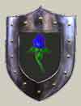
Scudo della Famiglia Bluenrose
Quelli della rosa blu, i Bluenrose, rimasero una ricca famiglia, non nobile ma ricca, con molti membri sublimi e considerata una famiglia onorevole e da rispettare, fornace di potenti guerrieri e valorosi combattenti. Sempre però indipendente dal potere dei nobili pergariani legati da rapporti di sangue con Ilgadon.
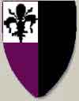
Scudo
dell'Ordine del Giglio
Nero
Quelli
del giglio nero si legarono e giurarono fedeltà alla Casata dei Quarras. Oggi
esiste l'Ordine dei
Cavalieri del Giglio Nero,
molto potente nella zona della Contea del Sud ma poco diffuso altrove.